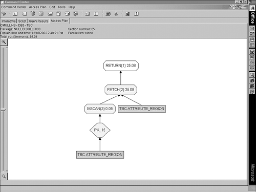
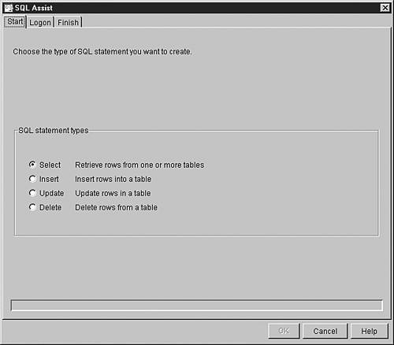

|
|
< Day Day Up > |
|
SQL Access GuidelinesThe SQL access guidelines will help you develop efficient data retrieval SQL for DB2 applications. Test them to determine their usefulness and effectiveness in your environment. Pretest All Embedded SQLBefore embedding SQL in an application program, you should test it using SPUFI, QMF, or whatever ad hoc query tool you have available. This way, you can reduce the amount of program testing by ensuring that all SQL code is syntactically correct and efficient. Only after the SQL statements have been thoroughly tested and debugged should they be placed in an application program. Use EXPLAINUse the EXPLAIN command to gain further insight into the performance potential for each SQL statement in an application. When EXPLAIN is executed on an SQL statement or application plan, information about the access path chosen by the optimizer is provided. This information is inserted into a DB2 table called the PLAN_TABLE. By querying the PLAN_TABLE, an analyst can determine the potential efficiency of SQL queries. Part V, "DB2 Performance Tuning," provides a complete description of the EXPLAIN command and guidelines for interpreting its output. EXPLAIN also populates the DSN_STATEMNT_TABLE with statement cost information and the DSN_FUNCTION_TABLE table with information about user-defined function usage. Use EXPLAIN and analyze the results for each SQL statement before it is migrated to the production application. Following this procedure is important not only for SQL statements in application programs, but also for canned QMF queries, and any other, predictable, dynamic SQL queries. For application programs, EXPLAIN can be used with the EXPLAIN option of the BIND command. Specifying EXPLAIN(YES) when you use BIND on an application plan or package provides the access path information necessary to determine the efficiency of the statements in the program. For a QMF (or ad hoc) query, use EXPLAIN on it before allowing the statement to be used in production procedures. The following is an example of running EXPLAIN for a SELECT statement:
EXPLAIN PLAN SET QUERYNO = 1 FOR
SELECT *
FROM DSN8810.DEPT
WHERE DEPTNO = 'D21';
EXPLAIN enables a programmer or DBA to analyze the chosen access path by studying the PLAN_TABLE. Because EXPLAIN provides access path information based on the statistics stored in the DB2 Catalog, you should keep these statistics current and accurate. Sometimes you must "fudge" the DB2 Catalog statistics to produce production access paths in a test environment. (See the section, "Influencing the Access Path," in Chapter 1 for more information.) Use All PLAN_TABLE Columns AvailableEach new release or version of DB2 adds new columns to the PLAN_TABLE. These new columns are used to report on new access paths and features. Sometimes shops fail to add the new PLAN_TABLE columns after a new release is installed. Be sure to verify that the PLAN_TABLE actually contains every column that is available for the current DB2 release being run. For more information on the PLAN_TABLE and the columns available for each DB2 release, refer to Chapter 25, "Using EXPLAIN."
Use the DSN_STATEMNT_TABLEAs of DB2 V6, EXPLAIN also can determine an estimated cost of executing SQL SELECT, INSERT, UPDATE, or DELETE statements. EXPLAIN will populate DSN_STATEMNT_TABLE, also known as the statement table, at the same time it populates the PLAN_TABLE. After running EXPLAIN, the statement table will contain cost estimates, in service units and in milliseconds, for the SQL statements being bound or prepared (both static and dynamic SQL). The estimates can be used to help determine the cost of running SQL statements. However, keep in mind that the cost numbers are just estimates. Factors that can cause the estimates to be inaccurate include cost adjustments caused by parallel processing, the use of triggers and user-defined functions, and inaccurate statistics. For more information on statement tables and cost estimates, see Chapter 25. Use DSN_FUNCTION_TABLE to Explain User-Defined Function UsageIf you have implemented user-defined functions (UDFs), be sure to create DSN_FUNCTION_TABLE, also known as the function table. DB2 inserts data into DSN_FUNCTION_TABLE for each function referenced in an SQL statement when EXPLAIN is executed on an SQL statement containing a UDF or when a program bound with EXPLAIN(YES) executes an SQL statement containing a UDF. The data DB2 inserts to the function table contains information on how DB2 resolves the user-defined function references. This information can be quite useful when tuning or debugging SQL that specifies a UDF. For more information on using EXPLAIN with the function table, see Chapter 4, "Using DB2 User-Defined Functions and Data Types." Enable EXPLAIN for Auto RebindEXPLAIN during auto rebind can be enabled if you set an appropriate DSNZPARM. An auto rebind occurs when an authorized user attempts to execute an invalid plan or package. To revalidate the plan or package, DB2 will automatically rebind it. If EXPLAIN during auto rebind is not turned on, then you will not have a record of the new access paths that were created. The DSNZPARM for auto rebind is ABIND (the default is YES); the DSNZPARM for binding during auto rebind is ABEXP (the default is YES). Plans and packages are invalidated when an object that an access path in the plan or package is using is dropped. Be sure that a proper PLAN_TABLE exists before enabling the EXPLAIN during auto rebind option. When Data Sharing Specify COEXIST for Auto RebindIf you are running in a data sharing environment, consider specifying COEXIST for ABIND. Doing so allows automatic rebind operations to be performed in a DB2 data sharing coexistence environment only when the plan or package is invalid, or when it was last bound on a new subsystem other than the one on which it is running. In this way, DB2 can keep the new access path even when a query is run in an older subsystem. Of course, DB2 will not magically use V7 features on a V6 subsystem (for example). NOTE When all members of a data sharing group have been migrated to the same DB2 version, ABIND COEXIST will be interpreted the same as ABIND YES. Utilize Visual Explain and Query Analysis ToolsVisual Explain is a tool provided by IBM as a free feature of DB2 for z/OS. Visual Explain will display graphical representations of the DB2 access paths and advice on how to improve SQL performance. The display can be for access paths stored in a PLAN_TABLE or for EXPLAIN output from dynamic SQL statements. One of the nice features of Visual Explain is its ability to display pertinent DB2 Catalog statistics for objects referenced in an access path. It is much easier to understand access paths from the visual representations of Visual Explain, than it is to interpret PLAN_TABLE output. Refer to Figure 2.1 for a sample Visual Explain screen shot. Figure 2.1. Visual Explain graphically depicts an EXPLAIN.You must run Visual Explain from a client workstation (there is no TSO or ISPF interface). Even with all of the new functionality of Visual Explain, you may need to augment this tool with more in-depth SQL tuning options. To isolate potential performance problems in application plans or single SQL statements, utilize all available analysis tools, such as BMC Software's SQL Explorer or Computer Associates' Plan Analyzer. These products analyze the SQL code, provide a clear, textual description of the access path selected by the DB2 optimizer, and recommend alternative methods of coding your queries. They are similar in function to Visual Explain, but provide an ISPF interface and more in-depth tuning recommendations. Avoid SELECT *As a general rule, a query should never ask DB2 for anything more than is required to satisfy the desired task. Each query should access only the columns needed for the function to be performed. Following this dictum results in maximum flexibility and efficiency. NOTE Another cardinal rule of database performance is "never say always or never." Well, perhaps this rule is better stated as "almost never say always or never." There are very few times in this text where I will say "always" or "never," but there are a few, such as never asking DB2 for anything more than is required. The gain in flexibility is the result of decreased maintenance on application programs. Consider a table in which columns are modified, deleted, or added. Only programs that access the affected columns need to be changed. When a program uses SELECT *, however, every column in the table is accessed. The program must be modified when any of the columns change, even if the program doesn't use the changed columns. This use complicates the maintenance process. For example, consider a program that contains the following statement:
EXEC SQL
SELECT *
INTO :DEPTREC
FROM DSN8810.DEPT
WHERE DEPTNO = :HV-DEPT
END-EXEC.
Suppose that the program is developed, tested, and migrated to the production environment. You then add a column to the DEPT table. The program then fails to execute the preceding statement because the DEPTREC layout does not contain the new column. (This program was compiled with the old DCLGEN.) The program must be recompiled with the new DCLGEN, a step that is not required when the program asks for only the columns it needs. Additionally, by limiting your query to only those columns necessary
Limit the Data SelectedReturn the minimum number of columns and rows needed by your application program. Do not code generic queries (such as SELECT statements without a WHERE clause) that return more rows than necessary, and then filter the unnecessary rows with the application program. Doing so wastes disk I/O by retrieving useless data and wastes CPU and elapsed time returning the additional, unneeded rows to your program. Allowing DB2 to use WHERE clauses to limit the data to be returned is more efficient than filtering data programmatically after it has been returned. Do Not Ask for What You Already KnowThis might sound obvious, but most programmers violate this rule at one time or another. For a typical example, consider what's wrong with this SQL statement: SELECT EMPNO, LASTNAME, SALARY FROM DSN8810.EMP WHERE EMPNO = '000010'; Give up? The problem is that EMPNO is included in the SELECT-list. You already know that EMPNO will be equal to the value '000010' because that is what the WHERE clause tells DB2 to do. But with EMPNO listed in the WHERE clause, DB2 will dutifully retrieve that column, too. This incurs additional overhead for each qualifying row, thereby degrading performance. So, this statement would be better coded this way: SELECT LASTNAME, SALARY FROM DSN8810.EMP WHERE EMPNO = '000010'; Singleton SELECT Versus the CursorTo return a single row, an application program can use a cursor or a singleton SELECT. A cursor requires an OPEN, FETCH, and CLOSE to retrieve one row, whereas a singleton SELECT requires only SELECT...INTO. Usually, the singleton SELECT outperforms the cursor.
Avoid Singleton SELECT When Modifying DataWhen developing a program to retrieve data that must be subsequently modified, avoid using a singleton SELECT. When the selected row must be updated after it is retrieved, using a cursor with the FOR UPDATE OF clause is recommended over a singleton SELECT. The FOR UPDATE OF clause ensures the integrity of the data in the row because it causes DB2 to hold an X lock on the page containing the row to be updated. If you use a singleton SELECT, the row can be updated by someone else after the singleton SELECT but before the subsequent UPDATE, thereby causing the intermediate modification to be lost. Use FOR READ ONLYWhen a SELECT statement is used only for retrieval, code the FOR READ ONLY clause. This clause enables DB2 to use block fetch, which returns fetched rows more efficiently for distributed DB2 requests. Efficient row fetches are important for dynamic SQL in an application program or SPUFI. Furthermore, the FOR READ ONLY clause can be used to encourage DB2 to use lock avoidance techniques and parallelism. QMF automatically appends FOR READ ONLY to SELECT statements. Static SQL embedded in an application program automatically uses block fetch if the BIND process determines it to be feasible. Allowing block fetch is important in a distributed DB2 environment. If data is blocked, less overhead is required as data is sent over the communication lines. NOTE The FOR FETCH ONLY clause provides the same function as FOR READ ONLY, but FOR READ ONLY is preferable because it is ODBC-compliant.
Additionally, consider using the OPTIMIZE FOR n ROWS clause to optimize network traffic. If your application opens a cursor and downloads a great amount of data, specifying a large value for n increases the number of DRDA query blocks that a DB2 server returns in each network transmission for a non-scrollable cursor. If n is greater than the number of rows that fit in a DRDA query block, OPTIMIZE FOR n ROWS lets the DRDA client request multiple blocks of query data on each network transmission instead of requesting a new block when the first block is full. Use DISTINCT with CareThe DISTINCT verb removes duplicate rows from an answer set. If duplicates will not cause a problem, do not code DISTINCT because it might add to overhead if it must invoke a sort to remove the duplicates. However, do not avoid DISTINCT for performance reasons if you must remove duplicates from your result set. It is better for DB2 to remove the duplicates than for the results to be passed to the program and then having the duplicates removed by application logic. One major benefit is that DB2 will not make any mistakes, but the application logic could contain bugs. For example, the following SQL will return a list of all departments to which an employee has been assigned with no duplicate WORKDEPT values returned: SELECT DISTINCT WORKDEPT FROM DSN8810.EMP; Consider Using Multiple DISTINCT ClausesThe DISTINCT keyword can be used at the statement level or at the column level. When used at the statement level, for example SELECT DISTINCT LASTNAME, WORKDEPT FROM DSN8810.EMP; duplicate rows are removed from the result set. So, only one LASTNAME – WORKDEPT combination will be returned even if multiple employees with the same last name work in the same department. When DISTINCT is used at the column level, for example SELECT AVG(SALARY), COUNT(DISTINCT EMPNO) FROM DSN8810.EMP; duplicate values are removed for the column on which the DISTINCT keyword is used. Prior to DB2 V7 only one DISTINCT clause can be specified in a SELECT list.
SELECT SUM(DISTINCT SALARY), COUNT(DISTINCT SALARY) FROM DSN8810.EMP; However, for DB2 V7 and earlier releases, you cannot specify multiple DISTINCT clauses on different columns, or you get SQLCODE –127.
SELECT COUNT(DISTINCT(ACTNO)),
SUM(DISTINCT(ACSTAFF))
FROM DSN8810.PROJACT
GROUP BY PROJNO;
You could even add a HAVING clause with a DISTINCT to this query as of V8, for example HAVING AVG(DISTINCT ACSTAFF) < 2.0; Code Predicates on Indexed ColumnsDB2 usually performs more efficiently when it can satisfy a request using an existing index rather than no index. However, indexed access is not always the most efficient access method. For example, when you request most of the rows in a table or access by a non-clustered index, indexed access can result in a poorer performing query than non-indexed access. This is so because the number of I/Os is increased to access index pages. As a general rule of thumb, keep in mind that an index enhances performance when the total I/O required to access the index pages and the specific table space pages is less than simply accessing all of the table space pages. You can find comprehensive guidelines for the efficient creation of DB2 indexes in Chapter 6, "DB2 Indexes." Use ORDER BY When the Sequence Is ImportantYou cannot guarantee the order of the rows returned from a SELECT statement without an ORDER BY clause. At times SQL developers get confused when DB2 uses an index to satisfy a query and the results are returned in the desired order even without the ORDER BY clause. But, due to the nature of the DB2 optimizer, the access path by which the data is retrieved might change from execution to execution of an application program. If the access path changes (or parallelism kicks in), and ORDER BY is not specified, the results can be returned in a different (non-desired) order. For this reason, always code the ORDER BY clause when the sequence of rows being returned is important. Limit the Columns Specified in ORDER BYWhen you use ORDER BY to sequence retrieved data, DB2 ensures that the data is sorted in order by the specified columns. Doing so usually involves the invocation of a sort (unless an appropriate index is available). The more columns that are sorted, the less efficient the query will be. Therefore, use ORDER BY on only those columns that are absolutely necessary.
Favor Stage 1 and Indexable PredicateFor SQL statements, you must consider at which stage the predicate is applied: Stage 1 or Stage 2. NOTE Stage 1 predicates were previously known as sargable predicates. Sargable is an IBM-defined term that stands for search arguable. The term simply defines in which portion of DB2 a predicate can be satisfied. The term sargable is ostensibly obsolete and has been replaced in the IBM literature by the term Stage 1 processing. A predicate that can be satisfied by Stage 1 processing can be evaluated by the Data Manager portion of DB2, not the Relational Data System. The Data Manager component of DB2 is at a level closer to the data than the Relational Data System. You can find a more complete description of the components of DB2 in Chapter 20, "DB2 Behind the Scenes." Because a Stage 1 predicate can be evaluated at an earlier Stage of data retrieval, you avoid the overhead of passing data from component to component of DB2. Try to use Stage 1 predicates rather than Stage 2 predicates because Stage 1 predicates are more efficient. Additionally, a query that can use an index has more access path options, so it can be more efficient than a query that cannot use an index. The DB2 optimizer can use an index or indexes in a variety of ways to speed the retrieval of data from DB2 tables. For this reason, try to use indexable predicates rather than those that are not. Of course, this raises the questions: "Which predicates are Stage 1 and which are Stage 2?" and "How do I know if a predicate is indexable or not?" This information is consolidated for you in Table 2.1.
If the predicate type is not listed in Table 2.1, then it is Stage 2 and non-indexable. Note that you can replace op with <=, >=, <, >, or <>. A noncol expr is a noncolumn expression; it refers to any expression in which a column of a table is not specified. Examples of such expressions include CURRENT TIMESTAMP - 10 DAYS :HOST-VARIABLE + 20 FLOAT(8.5) Stage 1 predicates combined with AND, combined with OR, or preceded by NOT are also Stage 1. All others are Stage 2. Additionally, please note that a LIKE predicate ceases to be Stage 1 if the column is defined using a field procedure. Indexable predicates combined with AND or OR are also indexable. However, note that predicates preceded by NOT are not indexable. NOTE All indexable predicates are also Stage 1. The reverse, however, is not true: All Stage 1 predicates are not necessarily indexable.
Additionally, Stage 1 processing and indexability are only two aspects of efficient query writing and, as such, do not guarantee the most effective way to code your query. Follow the rest of the advice in this chapter to formulate efficient SQL code. Finally, do not read more into this guideline than is intended. I am not saying you should never use Stage 2 predicates. Feel free to code Stage 2 predicates when necessary based on your application requirements. Using Stage 2 predicates is much preferable to returning the data to the program and filtering it there. CAUTION This information is accurate as of DB2 Version 8. Determine which predicates are Stage 1 and indexable with care because IBM tends to change certain predicates' stage and indexability with each release of DB2. Reformulate SQL to Achieve IndexabilityRemember that SQL is flexible and often the same results can be achieved using different SQL formulations. Sometimes one SQL statement will dramatically outperform a functionally equivalent SQL statement just because it is indexable and the other is not. For example, consider this SQL statement: SELECT EMPNO, FIRSTNME, MIDINIT, LASTNAME FROM DSN8810.EMP WHERE MIDINIT NOT BETWEEN 'A' AND 'G'; It is not indexable because it uses the NOT BETWEEN predicate. However, if we understand the data in the table and the desired results, perhaps we can reformulate the SQL to use indexable predicates, such as SELECT EMPNO, FIRSTNME, MIDINIT, LASTNAME FROM DSN8810.EMP WHERE MIDINIT >= 'H'; Or we could code MIDINIT BETWEEN 'H' AND 'Z' in place of MIDINIT >= 'H'. Of course, for either of these solutions to work correctly we would need to know that MIDINIT never contained values that collate lower than the value 'A'. Try to Avoid Using NOT (Except with EXISTS)In older versions of DB2, predicates using NOT were non-indexable and Stage 2. As of DB2 V4, predicates formed using NOT are evaluated at Stage 1, but they are still non-indexable. Therefore, whenever possible, you should recode queries to avoid the use of NOT (<>). Take advantage of your understanding of the data being accessed. For example, if you know that no values are less than the value that you are testing for inequality, you could recode COLUMN1 <> value as COLUMN1 >= value See the section on complex SQL guidelines for guidance in the use of the EXISTS predicate. Use Equivalent Data TypesUse the same data types and lengths when comparing column values to host variables or literals. This way, you can eliminate the need for data conversion. Because the data type or length does not match, DB2 evaluates the predicate as Stage 2 (even if the predicate could be Stage 1 if the data type and length matched). For example, comparing a column defined as INTEGER to another column defined as INTEGER is more efficient than comparing an INTEGER column to a column defined as DECIMAL(5,2). When DB2 must convert data, available indexes are not used. DB2 also does not use an index if the host variable or literal is longer than the column being compared, or if the host variable has a greater precision or a different data type than the column being compared. This situation adversely affects performance and should be avoided.
Use a CAST function to resolve data type mismatches for date and numeric values to avoid demotion to Stage 2. For example, if you need to compare a DECIMAL(9,2) column to a SMALLINT, cast the integer value to a decimal value as follows: WHERE DECIMAL(SMALLINTCOL, 9, 2) = DECIMALCOL Be sure to CAST the column belonging to the larger result set if both columns are indexed. That is, the column that can take on more distinct values should be the one cast. However, if only one column is indexed, CAST the one that is not indexed. You will need to rebind in order to receive the promotion to Stage 1. As of DB2 V6, and via a retrofit APAR to V5, DB2 partially alleviated the data type and length mismatch performance problem, but only for character data. When two character columns are specified in an equi-join predicate, they no longer need to be of the same length to be considered Stage 1 and indexable. Please note that this applies only to columns, not host variables or string literals. Also, note that the two columns being compared must be of CHAR or VARCHAR data type. For example, you cannot join an INTEGER column to a SMALLINT column and expect it to be Stage 1 or indexable (for DB2 V7 or earlier). Consider BETWEEN Instead of <= and >=The BETWEEN predicate is easier to understand and code than the equivalent combination of the less than or equal to predicate (<=) and the greater than or equal to predicate (>=). In past releases it was also more efficient, but now the optimizer recognizes the two formulations as equivalent and there usually is no performance benefit one way or the other. Performance reasons aside, one BETWEEN predicate is much easier to understand and maintain than multiple <= and >= predicates. For this reason, favor using BETWEEN. However, there is one particular instance where this guidelines does not apply—when comparing a host variable to two columns. Usually BETWEEN is used to compare one column to two values, here shown using host variables: WHERE COLUMN1 BETWEEN :HOST-VAR1 AND :HOST-VAR2 However, it is possible to use BETWEEN to compare one value to two columns, as shown: WHERE :HOST-VAR BETWEEN COLUMN1 AND COLUMN2 This statement should be changed to WHERE :HOST_VAR >= COLUMN1 and :HOST-VAR <= COLUMN2 The reason for this exception is that a BETWEEN formulation comparing a host variable to two columns is a Stage 2 predicate, whereas the preferred formulation is Stage 1. Consider IN Instead of LIKEWhenever feasible, use IN or BETWEEN instead of LIKE in the WHERE clause of a SELECT. If you know that only a certain number of occurrences exist, using IN with the specific list usually is more efficient than using LIKE. For example, use
IN ('VALUE1', 'VALUE2', 'VALUE3')
instead of LIKE 'VALUE_' The functionality of LIKE can be imitated using a range of values. For example, if you want a query to retrieve all employees with a last name beginning with K, you know that last names between KAAAAAAAAAAA and KZZZZZZZZZZZZ also satisfy the request. To optimize performance, favor using BETWEEN :VALUE_LO AND :VALUE_HI instead of LIKE 'VALUE%' Formulate LIKE Predicates with CareAvoid using the LIKE predicate when the percentage sign (%) or the underscore (_) appears at the beginning of the comparison string because they prevent DB2 from using a matching index. The LIKE predicate can produce efficient results, however, when you use the percentage sign or underscore at the end or in the middle of the comparison string.
DB2 does not use direct index lookup when a wildcard character is supplied as the first character of a LIKE predicate. DB2 can determine when a host variable contains a wildcard character as the first character of a LIKE predicate. The optimizer therefore does not assume that an index cannot be used; rather, it indicates that an index might be used. At runtime, DB2 determines whether the index will be used based on the value supplied to the host variable. When a wildcard character is specified for the first character of a LIKE predicate, DB2 uses a non-matching index scan or a table space scan to satisfy the search. Specify Appropriate Host Variable Values with LIKEThe LIKE predicate offers a great deal of flexibility and power to your SQL statements. Using LIKE you can quickly retrieve data based on patterns and wildcards. However, some uses of LIKE can be confusing to implement appropriately—especially when LIKE is used with host variables. Let's assume that you need to create an application that retrieves employees by last name, but the supplied value for the last name can be either the entire name or just the first few bytes of that name. In that case, the following query can suffice: SELECT EMPNO, FIRSTNME, LASTNAME FROM DSN8810.EMP WHERE LASTNAME LIKE :host_variable; In order for this to work, when you enter the value for host_variable always append percent signs (%) to the end of the value. The percent sign specifies that DB2 should accept as a match any number of characters (including 0). This must be done programmatically. So, if the value entered is SM, the host_variable should contain SM%%%%%%%% and if the value entered is SMITH, the host_variable should contain SMITH%%%%%. Append as many percent signs as required to fill up the entire length of the host variable. Failure to do this will result in DB2 searching for blank spaces. Think about it—if you assign SMITH% to a 10-byte host variable, that host variable will think it should search for SMITH%, that is SMITH at the beginning, four blanks at the end, and anything in the middle. So, for SMITH%%%%%, SMITH will be returned, but so will SMITHLY (or any name beginning with SMITH). There is no way to magically determine if what was entered is a complete name or just a portion thereof. If this is not acceptable, then a single query will not likely be feasible. Instead, you would have to ask the user to enter whether a full name or just a portion is being entered. Code Most Restrictive Predicate First (Within Predicate Type)DB2 uses a predefined method for evaluating SQL predicates. The sequence in which predicates are evaluated is dependent upon four different factors:
First, DB2 will apply the predicates that match the indexes selected in the access path. The sequence in which these predicates are applied is based on the order of the column in the index. So, you must design efficient indexes to impact performance (see Chapter 5, "Data Definition Guidelines," for more information on efficient index design). After applying matching index predicates, DB2 then applies
Within each of these three groups, the sequence in which predicates are evaluated is based on the predicate type and the sequence in which the predicate appears in the SQL statement. Predicate types are applied in the following sequence:
Due to the preceding set of rules, when you code predicates in your SELECT statement, place the predicate that will eliminate the greatest number of rows first (within predicate type). For example, consider the following statement: SELECT EMPNO, FIRSTNME, LASTNAME FROM DSN8810.EMP WHERE WORKDEPT = 'D21' AND SEX = 'F'; Suppose that the WORKDEPT has 10 distinct values. The SEX column obviously has only 2 distinct values. Because both are equality predicates, the predicate for the WORKDEPT column should be coded first (as shown) because it eliminates more rows than the predicate for the SEX column. The performance gain from predicate placement is usually minimal, but sometimes every little performance gain is significant. CAUTION Remember, this guideline is true only for like predicate types. If the predicates are not of the same type, the guideline is not applicable. Use Predicates WiselyBy reducing the number of predicates on your SQL statements, you might be able to achieve better performance in two ways:
However, if you remove predicates from SQL statements, you run the risk of changing the data access logic. So, remove predicates only when you're sure that their removal will not have an impact on the query results. For example, consider the following query: SELECT FIRSTNME, LASTNAME FROM DSN8810.EMP WHERE JOB = 'DESIGNER' AND EDLEVEL >= 16; This statement retrieves all rows for designers who are at an education level of 16 or above. But what if you know that the starting education level for all designers in an organization is 16? No one with a lower education level can be hired as a designer. In this case, the second predicate is redundant. Removing this predicate does not logically change the results, but it might enhance performance. On the other hand, performance possibly can degrade when you remove predicates. The DB2 optimizer analyzes correlation statistics when calculating filter factors. Examples of correlated columns include CITY and STATE (Chicago and Illinois are likely to occur together); FIRST_NAME and GENDER (Robert and male are likely to occur together). Because the filter factor might change when a predicate is changed or removed, a different access path can be chosen. That access path might be more (or less) efficient than the one it replaces. The basic rule is to test the SQL both ways to determine which will perform better for each specific statement. Truly "knowing your data," however, is imperative. For example, it is not sufficient to merely note that for current rows in the EMP table no designers are at an EDLEVEL below 16. This may just be a data coincidence. Do not base your knowledge of your data on the current state of the data, but on business requirements. You must truly know that a correlation between two columns (such as between JOB and EDLEVEL) actually exists before you modify your SQL to take advantage of this fact. In any case, whenever you make changes to SQL statements based on your knowledge of the data, be sure to document the reason for the change in the actual SQL statement using SQL comments. Good documentation practices make future tuning, maintenance, and debugging easier. Be Careful with Arithmetic PrecisionWhen you select columns using arithmetic expressions, be careful to ensure that the result of the expression has the correct precision. When an arithmetic expression operates on a column, DB2 determines the data type of the numbers in the expression and decides the correct data type for the result. Remember the following rules for performing arithmetic with DB2 columns:
The last rule may require additional clarification. When DB2 operates on two numbers, the result of the operation must be returned as a valid DB2 data type. Consult the following chart to determine the result data type for operations on any two numbers in DB2:
For example, consider the following SELECT: SELECT EMPNO, EDLEVEL/2, SALARY/2 FROM DSN8810.EMP WHERE EMPNO BETWEEN '000250' AND '000290'; This statement returns the following results:
EMPNO COL1 COL2
000250 7 9590.00000000
000260 8 8625.00000000
000270 7 13690.00000000
000280 8 13125.00000000
000290 6 7670.00000000
DSNE610I NUMBER OF ROWS DISPLAYED IS 5
Because EDLEVEL is an INTEGER and 2 is specified as an INTEGER, the result in COL1 is truncated and specified as an INTEGER. Because SALARY is a DECIMAL column and 2 is specified as an INTEGER, the result is a DECIMAL. If you must return a more precise number for COL1, consider specifying EDLEVEL/2.0. The result is a DECIMAL because 2.0 is specified as a DECIMAL. MULTIPLY_ALT(COL1, :HV2) The precision of the result will be the precision of each argument added together (unless that is greater than 31, in which case, the precision will be 31). The scale of the result is determined as follows:
Use Column Renaming with Arithmetic Expressions and FunctionsYou can use the AS clause to give arithmetic expressions a column name, as follows: SELECT EMPNO, EDLEVEL/2 AS HALF_EDLEVEL, SALARY/2 AS HALF_SALARY FROM DSN8810.EMP WHERE EMPNO BETWEEN '000250' AND '000290'; If you give expressions a descriptive name, SQL becomes easier to understand and maintain. Likewise, when specifying functions in the SELECT list, use the AS clause to give the new column a name. Decimal Precision and ScaleThe precision of a decimal number is the total number of digits in the number (do not count the decimal point). For example, the number 983.201 has a precision of 6. The scale of a decimal number is equal to the number of digits to the right of the decimal point. In the previous example, the scale is 3. Avoid Arithmetic in Column ExpressionsAn index is not used for a column when the column participates in an arithmetic expression. For example, the predicate in the following statement is non-indexable: SELECT PROJNO FROM DSN8810.PROJ WHERE PRSTDATE - 10 DAYS = :HV-DATE; You have two options to make the predicate indexable. You can switch the arithmetic to the non-column side of the predicate. For example SELECT PROJNO FROM DSN8810.PROJ WHERE PRSTDATE = DATE(:HV-DATE) + 10 DAYS; It makes no logical difference whether you subtract 10 from the column on the left side of the predicate, or add 10 to the host variable on the right side of the predicate. However, it makes a big performance difference because DB2 can use an index to evaluate non-column arithmetic expressions. Alternatively, you can perform calculations before the SQL statement and then use the result in the query. For example, you could recode the previous SQL statement as this sequence of COBOL and SQL: ADD +10 TO HV-DATE. COBOL SELECT PROJNO SQL FROM DSN8810.PROJ WHERE PRSTDATE = :HV-DATE; In general, though, it is wise to avoid arithmetic in predicates altogether, if possible. In this case, however, we are dealing with date arithmetic, which can be difficult to emulate in a program. The fewer arithmetic expressions in the SQL statement, the easier it is to understand the SQL. Furthermore, if arithmetic is avoided in SQL, you do not need to remember the exact formulations which are indexable and Stage 1. For these reasons, favor performing arithmetic outside of the SQL when possible. Use the Dummy Table to Select Data not in a DB2 TableSometimes you will need to use DB2 facilities to retrieve data that is not stored in a DB2 table. This can be a challenge until you learn about the dummy table, SYSIBM.SYSDUMMY1. Why would you want to SELECT data that is not stored in a DB2 table? Well, perhaps you need to use a function that does not require DB2 table data. One such function is RAND, which is used to return a random number. To use this function, you can select it from the dummy table as follows: SELECT RAND(:HOSTVAR) FROM SYSIBM.SYSDUMMY1; The dummy table is part of the DB2 Catalog and is available to all DB2 installations. NOTE Take care when using the RAND function to generate a random value. To get a random value every time, use RAND(), without the host variable. If using a host variable, supplying it with the same value will cause RAND always to return the same random value. Of course, this can be useful if you want consistent random values to be generated. Use Date and Time Arithmetic with CareDB2 enables you to add and subtract DATE, TIME, and TIMESTAMP columns. In addition, you can add date and time durations to or subtract them from these columns. Use date and time arithmetic with care. If users understand the capabilities and features of date and time arithmetic, they should have few problems implementing it. Keep the following rules in mind:
Additional guidelines on handling date and time data in DB2 are provided in the "Date and Time Guidelines" section later in this chapter. Use Built-in Functions Where AvailableDB2 comes with more than 120 built-in functions that can be used in SQL statements to transform data from one state to another. Use the built-in functions instead of performing similar functionality in your application programs. Prior to Version 6, DB2 provided only a minimal set of built-in functions. As such, developers needed to write their own work-arounds to achieve certain functionality. For example, previous editions of this book recommended using the following logic to return a day of the week DAYS(CURRENT DATE) - (DAYS(CURRENT DATE)/7) * 7 However, DB2 now provides a DAYOFWEEK function that is easier to use and understand than this expression. I do not recommend going back to your old programs and retrofitting them to use the new functions because the manpower required would be excessive and the return would be marginal. However, for all new and future SQL, use the built-in functions. For more information on the built-in functions available to DB2 consult Chapter 3, "Using DB2 Functions." NOTE Limit the Use of Scalar Functions in WHERE ClausesFor performance reasons, you can try to avoid using scalar functions referencing columns in WHERE clauses, but do not read too much into this recommendation. It is still wise to use scalar functions to offload work from the application to DB2. But remember that an index is not used for columns to which scalar functions are applied. Scalar functions typically can be used in the SELECT list of SQL statements with no performance degradation. Specify the Number of Rows to Be ReturnedWhen you code a cursor to fetch a predictable number of rows, consider specifying the number of rows to be retrieved in the OPTIMIZE FOR n ROWS clause of the CURSOR. This way, DB2 can select the optimal access path for the statement based on actual use. Coding the OPTIMIZE FOR n ROWS clause of the CURSOR does not limit your program from fetching more than the specified number of rows. This statement can cause your program to be inefficient, however, when many more rows or many fewer rows than specified are retrieved. So be sure you specify a reasonable estimate for the number of rows to be returned if you code this clause. Disable List Prefetch Using OPTIMIZE FOR 1 ROWIf a particular query experiences sub-optimal performance due to list prefetch, consider specifying OPTIMIZE FOR 1 ROW. Doing so makes it less likely that DB2 will choose an access path that uses list prefetch. This capability might be of particular use in an online environment in which data is displayed to the end user a screen at a time. NOTE Keep in mind that there is a difference between OPTIMIZE FOR 1 ROW and OPTIMIZE FOR n ROWS (were n is greater than 1). OPTIMIZE FOR 1 ROW tries to avoid sorts; OPTIMIZE FOR n ROWS will try to use the least cost access path for n. Disable Index AccessDuring the tuning process, you can append OR 0 = 1 to a predicate to eliminate index access. For example, consider a query against the EMP table on which two indexes exist: one on EMPNO and one on WORKDEPT. SELECT EMPNO, WORKDEPT, EDLEVEL, SALARY FROM DSN8810.EMP WHERE EMPNO BETWEEN '000020' AND '000350' AND (WORKDEPT > 'A01' OR 0 = 1); In this case, the 0 = 1 prohibits DB2 from choosing the WORKDEPT index by making the predicate Stage 2. This forces DB2 to use either the index on EMPNO or a table space scan. Similar techniques include adding 0 to a numeric column or appending a null string to a character column to avoid indexed access. The latter is preferred because it disables matching index access but leaves the predicate Stage 1. For example: SELECT EMPNO, WORKDEPT, EDLEVEL, SALARY FROM DSN8810.EMP WHERE EMPNO BETWEEN '000020' AND '000350' AND WORKDEPT > 'A01' CONCAT ''; Consider Other Forms of Query TweakingBoth OPTIMIZE FOR 1 ROW and using OR 0=1 are valid query tweaks for specific types of tuning. The following techniques can be used to tweak queries to try to encourage DB2 to use different access paths:
These techniques can cause DB2 to choose a different access path. Consider using them when you are in a jam and need to try different types of access. Compare and contrast the results and costs of each scenario to determine which might be most useful to your particular situation. Although non-column expressions are indexable (at least as of DB2 V5), IBM has made an exception for the "no operation" expressions because they are used as tricks to fool the optimizer. IBM did not include these expressions because these tricks were deployed by DB2 developers to avoid indexed access for more than a decade. An example SQL statement using one of these tricks follows: SELECT EMPNO, WORKDEPT, EDLEVEL, SALARY FROM DSN8810.EMP WHERE EMPNO < :HOST-VAR CONCAT ''; In this case, a table space scan is used because an empty string is concatenated to the host variable in the predicate and no other predicates are available for indexed access. However, the predicate remains Stage 1. Consider Using REOPT to Change Access PathsWhen SQL is bound into a plan or package you can specify whether to have DB2 determine an access path at runtime using values for host variables, parameter markers, and special registers. This is achieved using the REOPT (or NOREOPT) parameter. Specifying NOREOPT(VARS) will cause DB2 to determine access paths at BIND time, and not at runtime. Instead, specifying REOPT(VARS) will cause DB2 to redetermine the access path at runtime. Consider choosing this option if performance fluctuates based on the values supplied to host variables and parameter markers when your program is run.
Be Aware of Table Space Partitioning Key RangesWhen you access data in partitioned table spaces, be aware of the values used for the partitioning scheme. Prior to V4, DB2 scanned the entire table in a table space scan of a partitioned table. As of DB2 V4, you can limit a table space scan to accessing a subset of the partitions if the predicates of the WHERE clause can be used to limit the key ranges that need to be scanned. As of DB2 V5, the key ranges do not have to be contiguous. For this technique to work with host variables you must BIND using the REOPT(VARS) parameter. Specify Isolation Level for Individual SQL StatementsYou can use the WITH clause to specify an explicit isolation level at the SQL statement level. Four options are available:
Sometimes it makes sense to change the isolation level of an SQL statement within a program, without changing the isolation level of the other SQL statements in the program. For example, one query might be able to tolerate a dirty read because the data is being aggregated and only an estimated result is required. In this case, that query can be specified as WITH UR, even though the package for the program is bound as ISOLATION(CS). Use the WITH clause when you need to change the isolation level for specific SQL statements within a package or plan. More information on isolation levels is provided in Chapter 13, "Program Preparation." CAUTION
Consider KEEP UPDATE LOCKS to Serialize UpdatesThe KEEP UPDATE LOCKS clause can be specified for RR and RS isolation levels. With KEEP UPDATE LOCKS, DB2 acquires X locks instead of U or S locks on all qualified rows or pages. Use this option to serialize updates when concurrency is not an issue.
SQL Assist is a new feature of DB2 Version 7 that can greatly assist SQL developers. The SQL Assist feature is a GUI-driven tool to help you build SQL statements like SELECT, INSERT, UPDATE, and DELETE. Simply by picking and clicking SQL Assist will build syntactically correct SQL statements. Refer to Figure 2.2 for an example of SQL Assist. It is accessible from the following "products":
Figure 2.2. SQL Assist graphically guides SQL creation.SQL Assist can be used to help developers build correct SQL statements, but it does not provide SQL performance advice. Using SQL Assist, however, can help to promote using a standard format for SQL statements within your organization. |
|
|
< Day Day Up > |
|